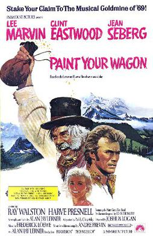

Joshua Logan
1969
164 minutes
Prepare yourself for the bloody mayhem and unholy carnage of Joshua Logan's Paint Your Wagon!
This is a musical. A musical with Lee Marvin and Clint Eastwood. Yes, they both sing.
Lee Marvin and Clint Eastwood are in a sort of ménage à trois with the same woman (Jean Seberg) in this film. If a woman tells you this is her favorite film, run. Nothing good will come of things. If adhering to this red flag narrows your dating pool too much, then that's on you. You should question your own life choices that brought you to this point.
This is a two hour and forty-four minute musical that feels like it is two hours and forty-four minutes long. That's neither a good nor a bad thing. Time will neither drag nor fly while you watch this, which can make it perfect viewing for when you're at the gate at the airport waiting for your delayed flight to take off.
Jean Seberg was also in Breathless by Jean-Luc Godard. That is where you recognize her from.
Don't think too hard about what Jean Seberg and Clint Eastwood and/or Lee Marvin are getting up to behind closed doors in this film. Unless that's what you're into, of course.
This is not going to be your favorite movie, but Lee Marvin's rendition of "Wandrin' Star" is kind of a karaoke banger if available. Only a few notes are just below the very bottom of your range, but with practice you could croak out a passable version of this to show off...
Time to choose something different: